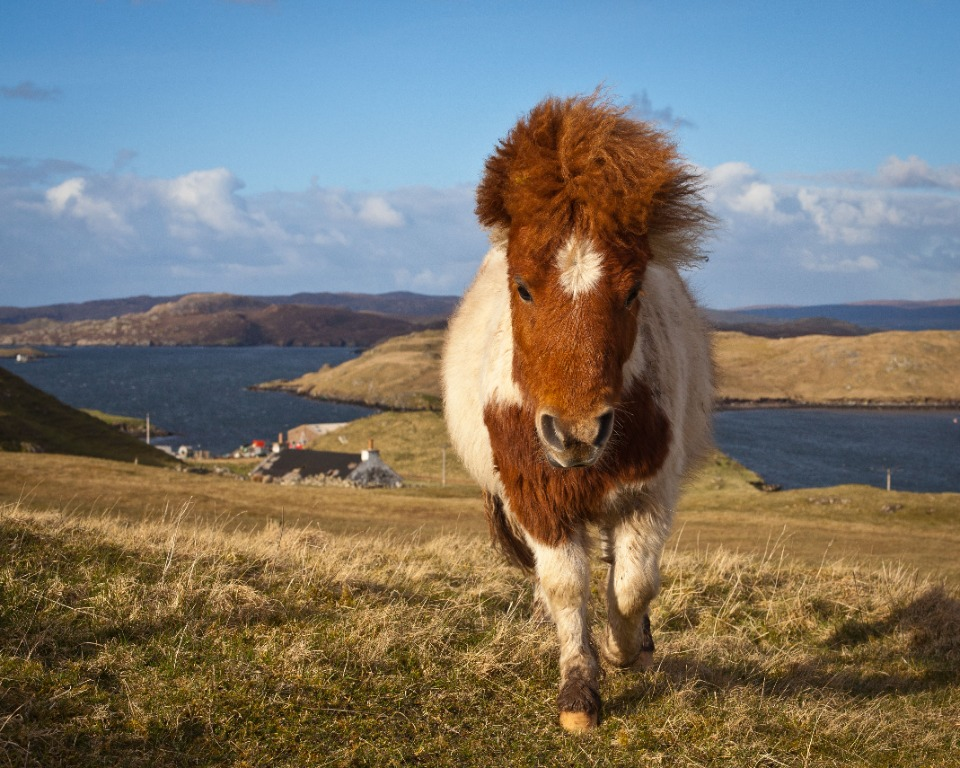
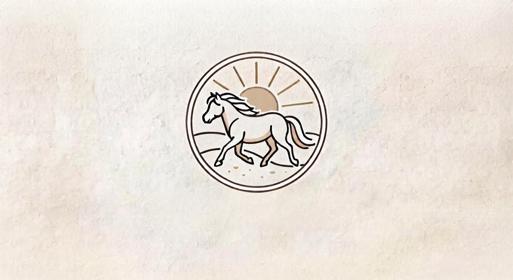
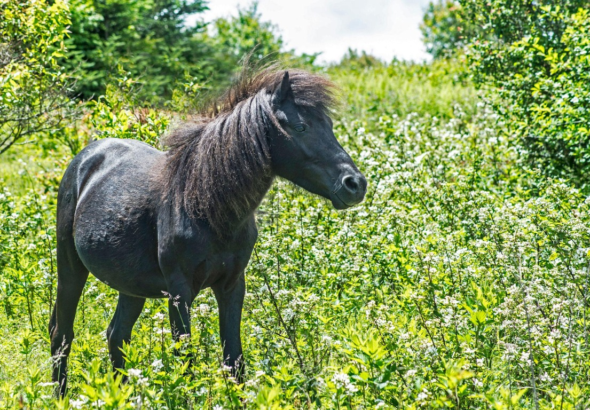
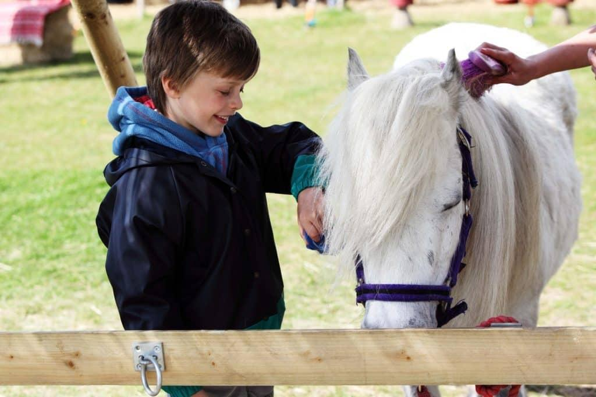

ARTICLE 1
Les origines du poney Shetland
Découvrez les origines écossaises du Shetland, son adaptation aux conditions difficiles et les caractéristiques qui font sa robustesse.
Lire l'article complet →
Découvrez nos articles sur les poneys Shetland. Cliquez sur une carte pour lire l'article complet.

ARTICLE 1
Découvrez les origines écossaises du Shetland, son adaptation aux conditions difficiles et les caractéristiques qui font sa robustesse.
Lire l'article complet →
ARTICLE 2
Apprenez à reconnaître les principales robes du Shetland et découvrez comment son pelage évolue selon les saisons.
Lire l'article complet →
ARTICLE 3
Découvrez le caractère vif et intelligent du Shetland, ses capacités d'apprentissage et les précautions avec les jeunes cavaliers.
Lire l'article complet →